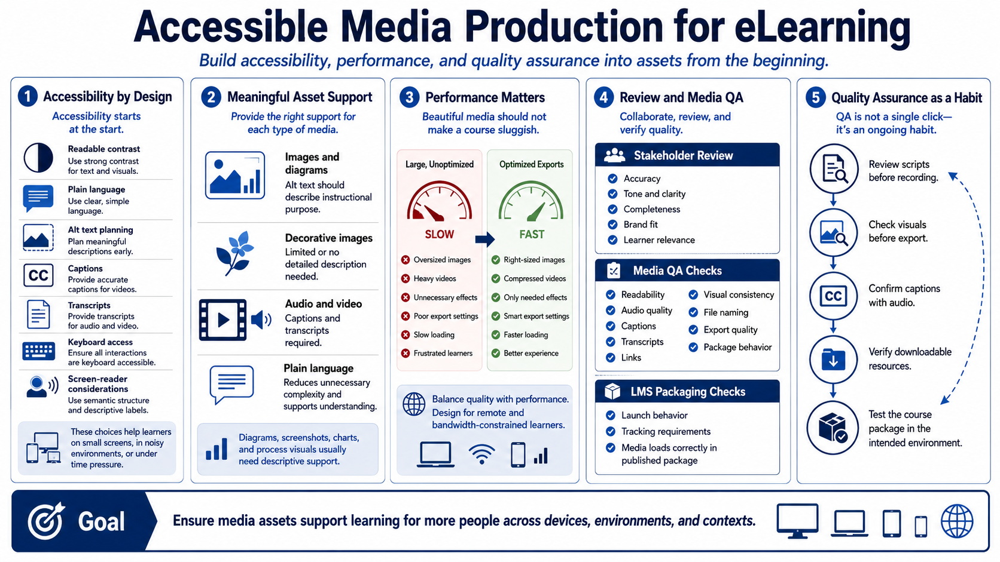

Accessibility, Review, and Quality Assurance
Connecting to LMS... Progress: in progress

Narration
Accessibility should shape media production from the beginning. Readable contrast, plain language, alt text planning, captions, transcripts, and keyboard and screen-reader considerations all affect whether learners can access and understand the course. Accessibility also improves the experience for learners on small screens, in noisy environments, or under time constraints.
Alt text should describe the instructional purpose of meaningful images. Decorative images may not need detailed descriptions, but diagrams, screenshots, charts, and process visuals usually do. Captions and transcripts should be available for audio and video. Plain language helps learners focus on the concept rather than decoding unnecessarily complex writing.
File size and performance are production concerns too. Oversized images, heavy videos, and unnecessary effects can slow course loading or frustrate learners. Export settings should balance quality with performance. A beautiful asset that makes a module sluggish may harm the learning experience, especially for remote learners or constrained networks.
Stakeholder review should confirm accuracy, tone, completeness, brand fit, and learner relevance. Media QA should check readability, audio quality, captions, transcripts, links, visual consistency, file naming, and export quality. LMS packaging considerations should include launch behavior, tracking requirements, and whether media loads correctly from the published package.
Quality assurance is not a single final click-through. It is a production habit. Review scripts before recording. Check visuals before export. Confirm captions with audio. Verify downloadable resources. Test the course package in the intended environment. The goal is to ensure assets support learning for more people across devices and contexts.